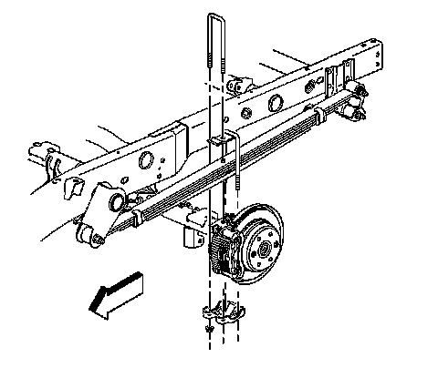
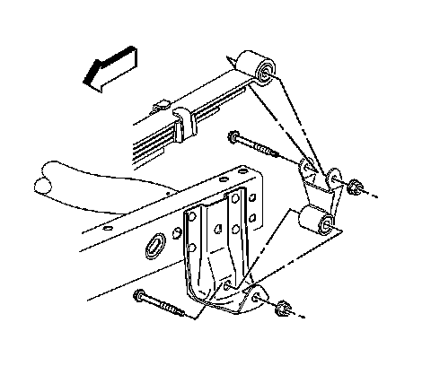
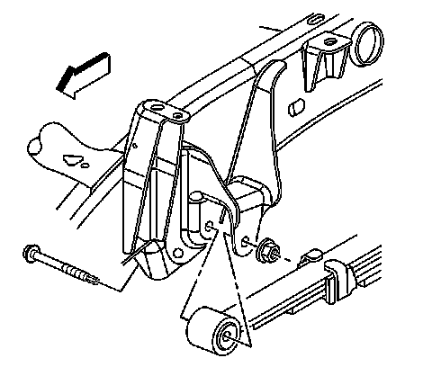

Rear Suspension Leaf Spring
Leaf Spring Replacement (2500 Series)
Removal Procedure
1. Raise and support the vehicle. Refer to Lifting and Jacking the Vehicle.
2. Support the rear axle independently in order to relieve the tension on the leaf springs.
3. Remove the trailer hitch, if equipped.
4. Remove the fuel tank.

5. Remove the U-bolt nuts.
6. Remove the U-bolts.
7. Remove the spring spacer.
8. Remove the anchor plate.

9. Remove the rear spring bracket nut and bolt.

10. Remove the front spring bracket nut and bolt.
11. Remove the leaf spring assembly from the vehicle.
Installation Procedure
1. Install the leaf spring assembly to the vehicle.
2. Loosely assemble the spring to the front hanger bracket.
3. Install the front spring hanger bracket bolt.
4. Install the front spring hanger bracket nut.
5. Install the rear spring hanger bracket bolt.
6. Install the rear spring hanger bracket nut.
Important: Do not reuse the U-bolts.
7. Install the spring spacer.
8. Install the U-bolts.
9. Install the anchor plate.
Notice: Refer to Fastener Notice.
10. Install the U-bolt nuts.
^ Tighten the front hanger bracket nut to 150 N.m (110 lb ft).
^ Tighten the rear hanger bracket nut to 95 N.m (70 lb ft).
11. Install the fuel tank.
12. Install the trailer hitch, if equipped.
13. Remove the rear axle support.
14. Remove the safety stands.
15. Lower the vehicle.